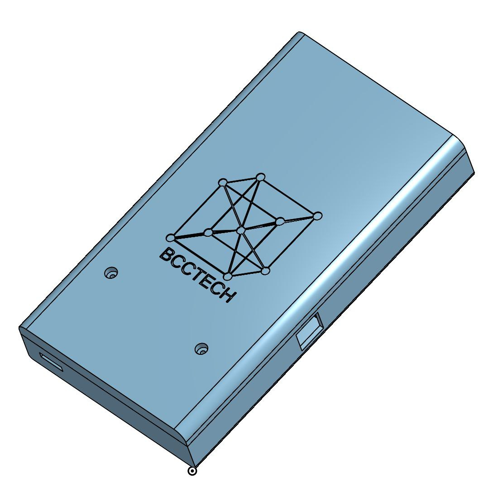
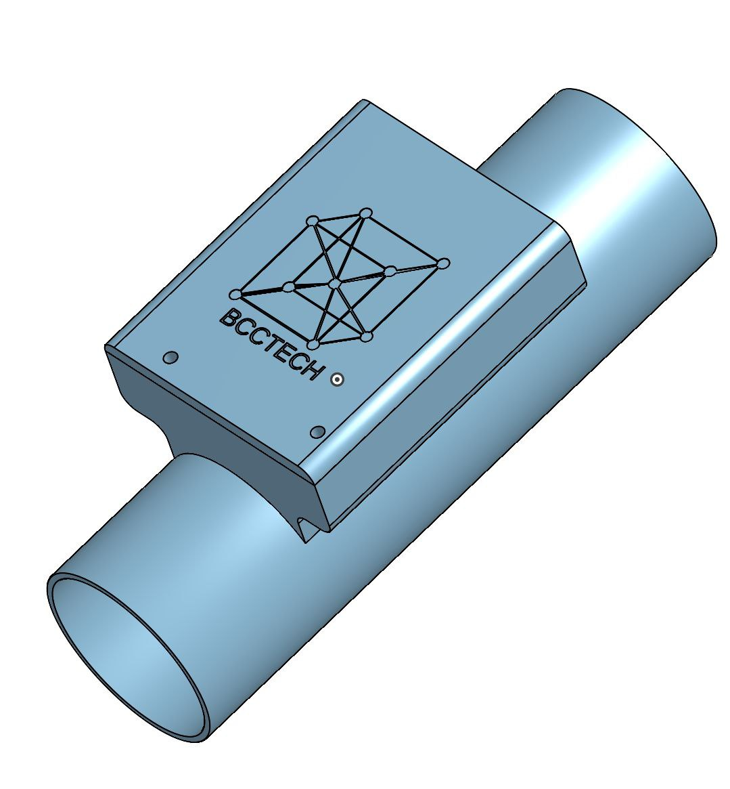

La muestra
El electrodo entra en contacto con la muestra líquida. El barrido de frecuencias, representado por las barras de la gota, recorre la muestra de altas a bajas frecuencias.
Del agua al dato: espectroscopía de impedancia en tu mano.
EIS de bolsillo para medir muestras líquidas con frecuencia y obtener curvas Bode y Nyquist listas para reporte. También en formato de tubería para lectura continua.
Cómo funciona
La espectroscopía de impedancia aplica una señal eléctrica alterna a la muestra y mide cómo responde en un barrido de frecuencias. Esa respuesta describe la muestra sin alterarla.
El electrodo entra en contacto con la muestra líquida. El barrido de frecuencias, representado por las barras de la gota, recorre la muestra de altas a bajas frecuencias.
AquaSpecter aplica una perturbación AC pequeña y registra la respuesta en magnitud y fase a cada frecuencia.
La respuesta se convierte en curvas Bode y Nyquist listas para interpretar y reportar, con el mismo criterio en cada medición.
Formatos
El mismo principio en un equipo compacto para mediciones puntuales o integrado a la tubería para seguimiento continuo.

EIS de bolsillo para medición frecuente y lectura clara.

EIS integrado para lectura continua en muestras líquidas.
Qué entrega
Cada medición produce las dos lecturas estándar de la EIS, con el mismo formato de una muestra a otra.
Curvas ilustrativas de un circuito de Randles con difusión de Warburg. No son mediciones de AquaSpecter.
Ficha técnica
Espectroscopía de impedancia electroquímica (EIS) con barrido de frecuencias.
Líquidas: validación puntual o seguimiento continuo en proceso.
Curvas Bode y Nyquist, reportes y tendencias en el formato de tubería.
De bolsillo (compacto) y de tubería (integrado al proceso).
Rango de frecuencias, electrodos y protocolo se definen con cada muestra durante el piloto.
Puesta en marcha guiada e interpretación inicial con el equipo de BCC.
Combínalo
Cuéntanos qué necesitas medir y diseñamos el piloto contigo.